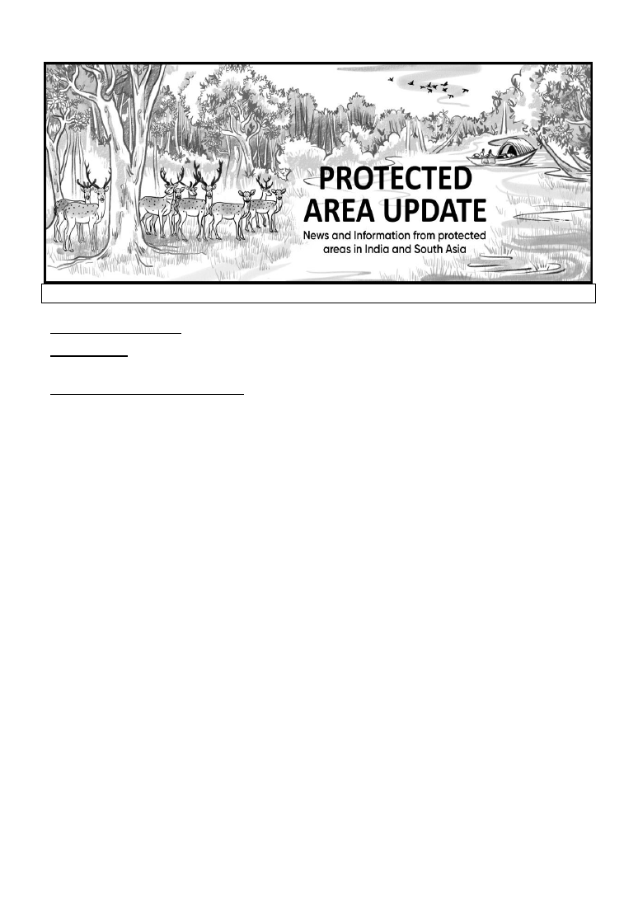
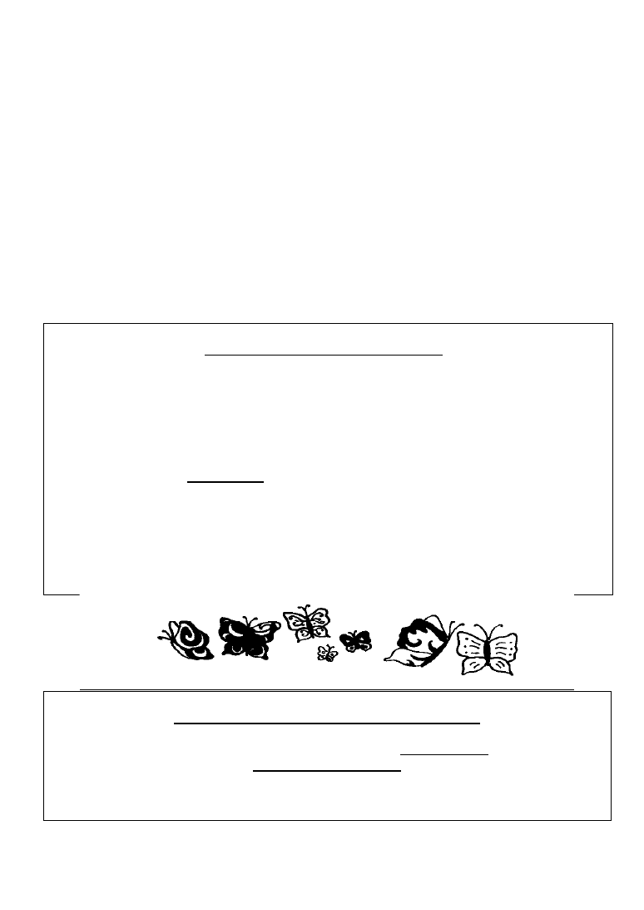
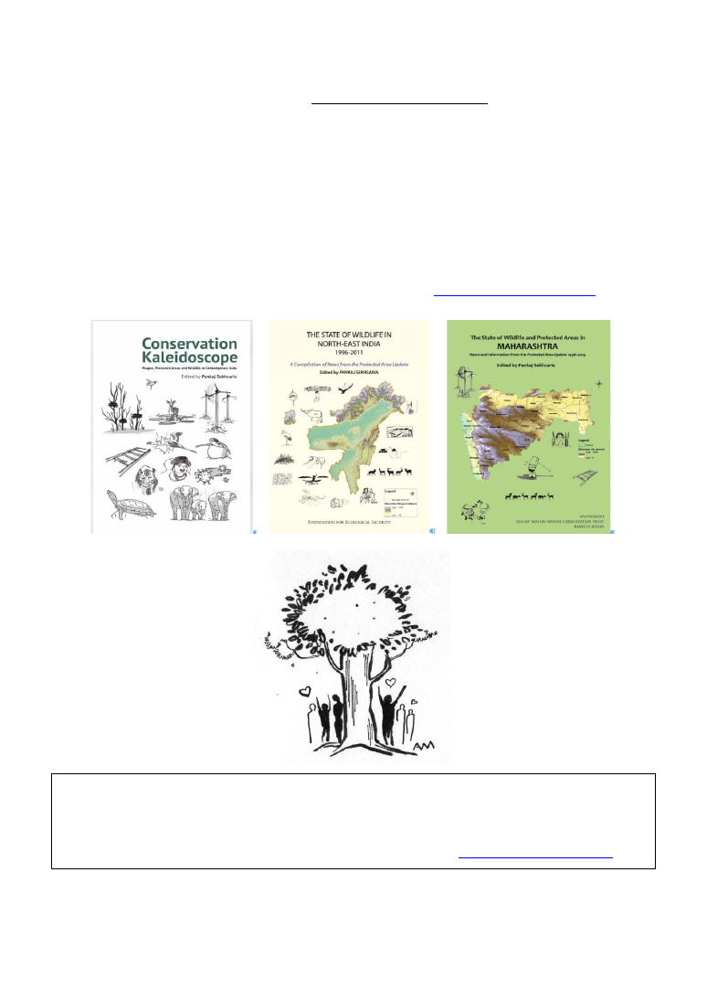
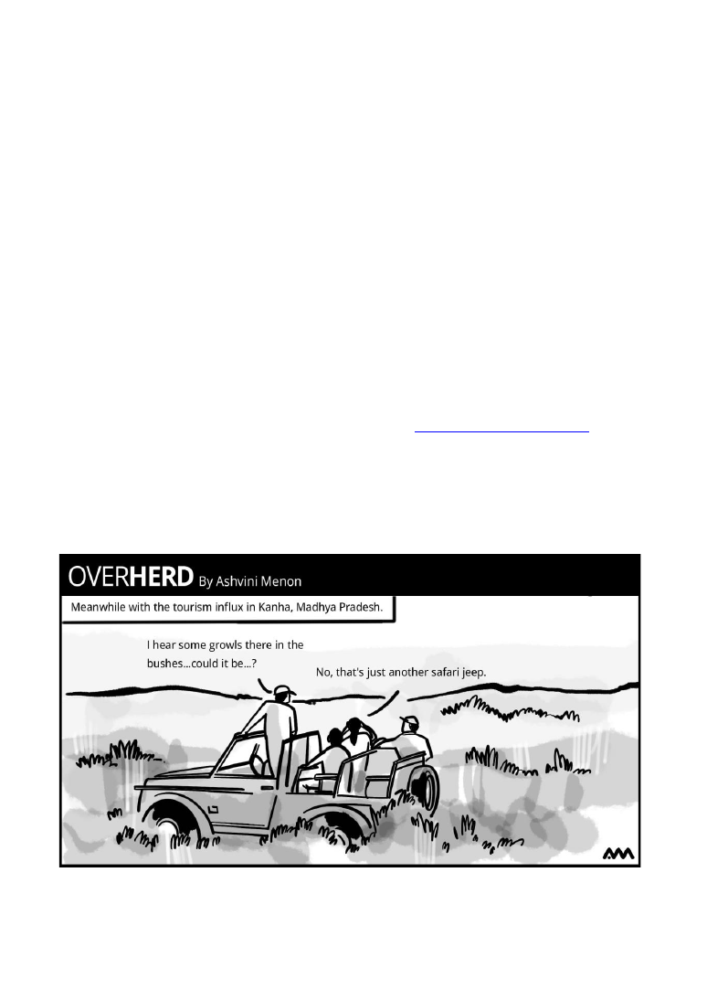
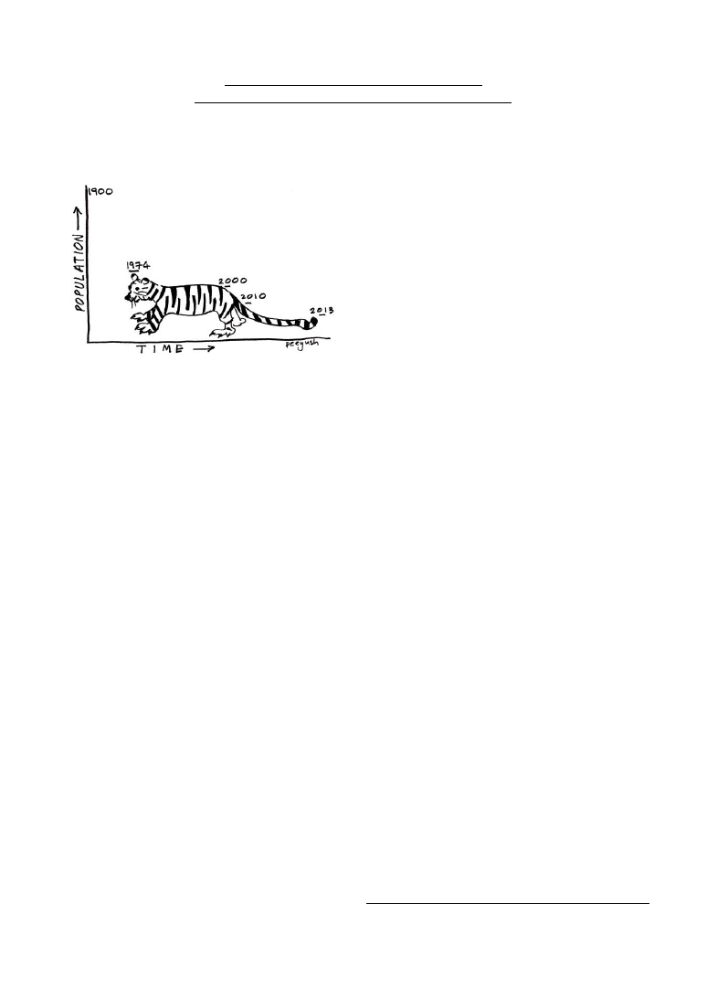

Vol. XXIX, No. 5
October 2023 (No. 165)
LIST OF CONTENTS
EDITORIAL
3
The State of India's Tigers and Birds
NEWS FROM INDIAN STATES
Andaman & Nicobar Islands
4
A&N admin floats draft luxury tent policy for
adventure, wildlife and heritage tourism
Assam
4
Five poachers & smugglers arrested in Nagaon
district in August
Karnataka
4
FD initiates Bandipur Yuva Mitra program
around TR
Hakki Pikki, Iruliga tribals get land rights
adjoining Bannerghatta NP
FD wager accidentally trampled by injured
elephant in Hassan Forest Division
State needs CAMPA funds for curbing human
elephant conflict: Karnataka forest minister
Madhya Pradesh
6
MP records 32 tiger deaths from January to
August 2023
State’s wildlife action plan urges proper
planning for tiger tourism
Centre eyes Nauradehi WLS for releasing
cheetahs
FD proposes TR status for Madhav NP,
Nauradehi & Ratapani WLSs
Maharashtra
7
8000 ha of forests handed over for timber
extraction in lieu of Kanhargaon WLS
NTCA panel to investigate tiger deaths in
Vidarbha
Complaint against online booking firm at TATR
for embezzlement; contract terminated
Odisha
9
55% fall in Odisha tiger numbers since 2006
Odisha to conduct its own tiger census
Rajasthan
10
NTCA approves expansion of three TRs in
Rajasthan; new TR in Dholpur-Karauli
Tamil Nadu
10
Madras HC asks Tamil Nadu govt. to acquire all
private forests within notified elephant
corridors
Uttarakhand & Himachal Pradesh
11
Tiger from Rajaji TR walks through four states
to reach Renuka forest
Uttar Pradesh
11
FD suspects that deaths due to murders in Bijnor
being attributed to leopard attacks
West Bengal
12
FD seeks funds for tiger conservation in Neora
Valley NP
South 24-Paraganas Forest Division in
Sunderbans gets new tranquilliser guns
Fishing cat breeding program proposed at
multiple sites
NATIONAL NEWS FROM INDIA
13
3,682 tigers in India: Tiger census 2022
State of India's Birds 2023: An overview

Protected Area Update
Vol. XXIX, No. 5
October 2023 (No. 165)
2
150 elephant corridors in India: Project Elephant
study
SC permits Centre to replace CEC with a
permanent body of experts
SOUTH ASIA
18
A project to restore tree cover on one million
hectares of land in Eastern Himalayas
Bangladesh
Studies & awareness generation initiatives for
tiger conservation in Sundarbans
Bangladesh pauses plan to reintroduce tigers in
Chittagong Hills
INTERNATIONAL NEWS
19
Asian elephant expert R Sukumar elected as a
vice-chair of IPCC
Alien species invasion at unprecedented rates
around the world: IPBES study
OVERHERD – A visual comment
20
IN MEMORY
21
Aditya 'Dicky' Singh
S Jayachandran
FROM THE ARCHIVES
23
PERSPECTIVE
24
Undocumented and unacknowledged: marine
diversity of Mumbai's coastline
Protected Area Update
Vol. XXIX
,
No. 5, October 2023 (No. 165)
Editor:
Pankaj Sekhsaria
Associate Editor:
Reshma Jathar
Illustrations:
Ashvini Menon, Siddhi Jadhav
,
Shruti Kulkarni, Madhuvanti Anantharajan
&
Peeyush Sekhsaria
Produced by
Kalpavriksh
and the
Centre for Policy Studies, IIT Bombay
Editorial Address:
C/o Kalpavriksh,
Apartment 5, Shri Dutta Krupa, 908 Deccan Gymkhana,
Pune 411004, Maharashtra, India.
Tel/Fax: 020 – 25654239; Email: psekhsaria@gmail.com
Website: http://kalpavriksh.org/index.php/conservation-livelihoods1/protected-area-update
***
Note:
Stories that appear in the
PA Update
are edited version of the original news reports first
published in the source mentioned at the end of the story.
Publication of the PA Update has been supported by
Duleep Matthai Nature Conservation Trust
C/o
Foundation for Ecological Security
http://fes.org.in/
Paul Hamlyn Foundation
and
Donations from a number of individual supporters
Protected Area Update
Vol. XXIX, No. 5
October 2023 (No. 165)
3
EDITORIAL
The State of India's Tigers and Birds
The last few months have seen the publishing
of two important and very interesting all India
assessments of what are without doubt the
most popular wildlife in the country - tigers
and birds.
The outcome of the tiger census, one
of the most anticipated and reported upon
exercises in India was officially released on
International Tiger Day, July 29. At first
glance the report provides positive news - the
tiger population in India has grown 24% in the
last four years: from 2,967 in the 2018 census
to 3,682 tigers in 2022. While the numbers do
provide hope and some cheer, relying just on
such quantitative assessments has problems
and limitations.
This is particularly true when one
considers the larger macro-level trends such as
those of habitat loss and degradation, the
overall development trajectory that continues
to sacrifice sensitive natural ecosystems for
economic growth and the even larger global
concern of climate change that is bound to
impact ecosystems and species in ways that we
cannot imagine. While tiger numbers might be
rising in pockets because of greater protection
and better management, the key long-term
concerns would need to be addressed at the
landscape level. The numbers do reveal a lot
but we should be looking out also for what they
conceal or miss out completely.
One interesting side-story here, for
instance, is about specific States. Odisha has
decided to conduct its own tiger census
because for them the national census does not
depict the real Odisha picture. They believe
they have far more tigers than have been
documented. Similar is the story from West
Bengal where the state authorities are not
convinced of the numbers of tigers reported
from Buxa and Neora Valley.
The other all India report that comes
from within a completely different set of
methodologies and institutions is the 'State of
India's Birds'. A collaborative effort of at least
13 organisations including government bodies,
it uses crowd sourced and citizen-science data
contributed by 30,000 bird watchers from
across the country. It is based on a staggering
30
million
observations
and
provides
important insights on multiple bird-related
issues: population trends for particular species
(the expanding foot-print for e.g., of the Indian
Peafowl and the Asian Koel); a decline in
populations of at least 204 species with raptors,
migratory shorebirds and ducks suffering the
most; and of open ecosystems, rivers and
coasts seeing the bigger declines. The report
also identifies the key threats to birds in India
and has recommendations for species of high
conservation priority, neglected habitats and to
promote research and monitoring.
The task of getting a national-level
macro picture for any species or family of
animals in a country as diverse, rich and
complicated as India is undoubtedly a very
difficult and complex one. There is also an
important optics role that such assessments and
reports play. In an increasingly crowded world
of the media they provide an opportunity to
draw attention to issues and denizens of this
country that are otherwise at the bottom of the
priority pyramid. For these reasons and for
their impact, these efforts have to be
commended. This, even as we should ask for
more financial, technical and human resources
for studies that help us understand our wild
world and also make a case for their
conservation and better management.
Protected Area Update
Vol. XXIX, No. 5
October 2023 (No. 165)
4
NEWS FROM INDIAN STATES
ANDAMAN & NICOBAR ISLANDS
A&N admin floats draft luxury tent policy
for adventure, wildlife and heritage
tourism
The Directorate of Information, Publicity &
Tourism (IP&T), Andaman & Nicobar Islands,
has prepared a draft luxury tent policy for
adventure, heritage, wildlife and eco-tourism
in the islands. The draft policy outlines
guidelines for establishment, operation and
management of luxury tents in remote areas. It
aims to enhance tourist’s experience, preserve
ecological sustainability, promote responsible
tourism and maintain the ecological balance.
October 15 was set as the last date for
receiving citizen comments on the draft policy.
Source: Sanjib. ‘Directorate of IP&T prepares
draft Luxury Tent Policy with
increasing demand for eco, adventure,
wildlife and heritage tourism in A&N
Islands,’
www.andamansheekha.com
,
15/09/2023.
ASSAM
Five poachers & smugglers arrested in
Nagaon district in August
The Assam Police’s Special Task Force (STF)
in collaboration with the Wildlife Crime
Control Bureau (WCCB) arrested five
poachers and smugglers in Nagaon district and
seized body parts of different wild animals.
Based on specific information, the STF
planned a joint operation with WCCB on
August 22 and conducted a raid in the Kaliabor
area. 12 elephant tusks, two tiger canine teeth,
15 rhino hooves, one deer antler and more than
one kg of pangolin scales were seized during
the operation. The team also found five mobile
phones
used
for
networking
and
communication.
The STF handed the arrestees to the
Jakhalabandha Police Station along with the
seized items. Three of the arrestees are
residents of Jakhalabandha area of Nagaon
district while the other two are residents of
Guwahati.
This is said to be one of the biggest
seizures in Assam in August and the fourth
recovery of smuggled animal body parts
including elephant tusks in the state in the 10
days between August 12 and 22.
The same day (August 22) the
Government Railway Police also seized an
elephant tusk weighing 2.3 kg from the Lachit
Express at Kamakhya Railway Station. Earlier,
on August 18, forest officials in Morigaon
recovered an elephant tusk weighing 2.5 kg,
while on August 13, the WCCB and STF
arrested three suspected poachers from
Chirang district near the Bhutan border and
recovered a large amount of elephant tusks.
While
frequent
recoveries
of
smuggled body parts of wild animals have
raised concern over the safety of those species,
a senior official of Assam police said the
increased number of recoveries were due to
additional operations being carried out by the
authorities.
Source: Biswa Kalyan Purkayastha. ‘Five
arrested with body parts of rhino,
tiger, elephants in Assam,’
www.hindustantimes.com
,
23/08/2023.
KARNATAKA
Hakki Pikki, Iruliga tribals get land rights
adjoining Bannerghatta NP
114 members of the Hakki Pikki and Iruliga
tribal communities were recently granted title
deeds for two acres of land each on the edges
of the Bannerghatta National Park (NP). In
1962, the Hakki Pikki community had been
granted 350 acres of land, denotified from the
Ragihalli forest near Bannerghatta. The land
Protected Area Update
Vol. XXIX, No. 5
October 2023 (No. 165)
5
has been handed over after declaring it a no-
development zone to block the entry of the
real-estate mafia here.
The allocation happened due to the
efforts of the Hakki Pikki and Iruliga Tribal
Society with the help of the Society for
Informal Education and Development Studies
and the Environment Support Group.
Source: Chiranjeevi Kulkarni. 'Hakki Pikki,
Iruliga tribals get land rights in
Bannerghatta',
www.deccanherald.com, 25/08/2023.
Vikhar Ahmed Sayeed, In a historic
victory, Hakki Pikki, Iruliga tribes
secure land ownership on the edge of
Bannerghatta National Park',
www.frontline.thehindu.com,
24/08/2023
FD wager accidentally trampled by injured
elephant in Hassan Forest Division
An expert in firing tranquilizer darts at
elephants, HH Venkatesh aka Aane Venkatesh,
succumbed to injuries after he was accidentally
trampled upon by an injured elephant near
Alur. Venkatesh was working on daily wages
for decades with the forest department (FD).
Bheema, the 40-year-old tusker who
trampled Venkatesh, had injuries on his back.
The elephant had sustained injuries during a
fight with another tusker in the forest in July.
The Hassan Forest Division had taken
permission
from
the
principal
chief
conservator of forests to tranquilize Bheema
for treatment. A team of doctors had treated
Bheema with the help of two tamed elephants
two days earlier.
At the time, Venkatesh was standing
20 feet away from the elephant after darting the
animal from the rear. The elephant turned back
instead of moving ahead and trampled
Venkatesh who stumbled and fell to the ground
while trying to save himself. The seriously
injured Venkatesh was immediately admitted
to HIMS Hospital where he breathed his last on
August 31. According to the villagers, Bheema
had been roaming in and around the border
villages with a lot of pain since he was injured.
They said, however, that he did not attack any
person or animal since being injured.
Source: BR Udaya Kumar. ‘Aane Venkatesh,
expert in firing tranquilizer darts at
elephants, trampled to death by
tusker,’
www.newindianexpress.com
,
31/08/2023.
State needs CAMPA funds for curbing
human elephant conflict: Karnataka forest
minister
Karnataka minister for forest, ecology and
environment, Eshwar Khandre, said recently
that his department requires at least Rs. 500
crore to take up works aimed at preventing
human-animal conflict. He pointed out that 11
people had died in incidents involving wildlife
in 15 days in August and early September. The
minister was speaking to reporters after a
meeting with officials from the forest and
home departments in the first week of
September.
38 elephants have also died in the state
this year. One of elephants died in train
collision, 10 due to electrocution, two
elephants were killed by gunshots while 25 are
said to have died of natural causes.
There is a need to construct railway
barricades with a total length of about 640 km,
but only 312 km could be completed, the
minister informed. He cited a report by experts
from the Indian Institute of Science, which has
recommended railway barricades as an
effective and long-term measure to prevent
elephants from entering human habitations.
Construction of railway barricades
will cost about Rs. 1.5 crore per km and the
state does have Rs. 500 crore funds collected
by the Compensatory Afforestation Fund
Management
and
Planning
Authority
(CAMPA). However, the Centre is not
releasing CAMPA funds, the minister said.
According to the state’s data, there are
6,395 elephants in Karnataka.

Protected Area Update
Vol. XXIX, No. 5
October 2023 (No. 165)
6
Source: ‘11 people died in past 15 days in
Karnataka due to human-animal
conflict: Minister,’
www.newindianexpress.com
,
05/09/2023.
FD initiates Bandipur Yuva Mitra
program around TR
The Bandipur Tiger Reserve (TR) authorities
have initiated a Bandipur Yuva Mitra program
to connect with people living in and around the
forests of the TR. The program that was
initiated in the month of June includes a day-
long workshop where people attend a three-
hour indoor session, a three-hour field session
and a safari. A quiz is conducted and they are
given certificates of participation at the end of
the day.
The target audience of the program are
residents of five taluks surrounding the forest -
-
Chamarajanagar,
Gundlupet,
Kotte,
Nanjangud and Saragu. The aim is to make at
least 15,000 people take part in the programme
annually. The program is said to have become
popular in the local community and has also
caught the attention of United Nations
Development Programme (UNDP). They have
recognised it and shown interest to be
knowledge partners for the programme. Many
government schools have also shown interest
to partner with the forest department.
Source: Bosky Khanna. 'Bandipur Yuva Mitra
a hit with forest dwellers',
www.newindianexpress.com,
20/08/2023.
MADHYA PRADESH
MP records 32 tiger deaths from January
to August 2023
32 tiger deaths have been reported from
Madhya Pradesh (MP) from January to August
2023. The state had reported a total of 34 tiger
deaths for the calendar year 2022.
Of the 32 deaths reported this year,
nine have been reported from the Bandhavgarh
Tiger Reserve.
As per official figures, 130 tigers have
died in the country in the past eight months. In
10 years between 2012 and 2022, 270 tiger
deaths have been reported from MP, which is
the highest for the country.
Source: Amarjeet Singh. ‘In 2023, Madhya
Pradesh reported one tiger death
every week,’
www.timesofindia.indiatimes.com
,
04/09/2023.
State’s wildlife action plan urges proper
planning for tiger tourism
Madhya Pradesh (MP) government’s recently
released State Wildlife Action Plan (SWAP)
2023-2043 has recommended measures to
ameliorate impacts of tourism in wildlife areas.
It has stressed on an urgent need to plan and
develop other wildlife rich areas which have
remained untapped so far as ecotourism
destinations. Kanha, Bandhavgarh and Pench
Tiger Reserves (TRs) are the most visited
wildlife destinations, primarily because of the
high chances of sighting a tiger and easy
accessibility by rail, road and air.
Since 2005, these well-known reserves
have been experiencing a rapid increase in
tourist footfall and consequent mushrooming
of eateries, hotels and big resorts. As a result,
the buffer zones and corridors are now
beginning to feel the pressure of growth in
tourism infrastructure, and access to some
corridors is reportedly threatened.
The other major driver of tourism in
some protected areas (PAs) such as Satpura
and Bandhavgarh is pilgrimage. Satpura
receives a large number of visitors during
certain festivals. Two religious congregations
at Nagdwari and Mahadeo take place in August
and February and thousands of pilgrims visit
these areas. 4,000 vehicles enter Pachmarhi
and 400 makeshift shops are built by locals and
religious trusts during these congregations.
The festivities are for 12 days but the after
effects continue for much longer.
The SWAP has stated that the issue
needs to be addressed to reduce the adverse
Protected Area Update
Vol. XXIX, No. 5
October 2023 (No. 165)
7
impacts on forests and wildlife. Further, it has
suggested inclusion of detailed ecotourism
sub-plans as a part of the tiger conservation
places of TRs, the management plans of PAs
and working plans in case of territorial
divisions. The SWAP has suggested a regular
review to ensure that tourism development in
TRs, PAs and territorial divisions follows the
principles of ecotourism and strictly adheres to
the guidelines given by the national and state
wildlife action plans and the National Tiger
Conservation Authority.
Source: ‘Bhopal: Tourist Influx At Tiger
Reserves Taking Toll On Natural
Resources,’
www.fresspressjournal.in
,
10/09/2023.
Centre eyes Nauradehi WLS for releasing
cheetahs
A study conducted by the National Tiger
Conservation
Authority
(NTCA)
in
collaboration with the Wildlife Institute of
India (WII) has deemed Nauradehi Wildlife
Sanctuary (WLS) as a suitable location for the
translocation of cheetahs. Union minister for
environment, forest, and climate change,
Bhupendra Yadav, is said to have recently sent
a letter to the state minister Gopal Bhargava,
highlighting Nauradehi as a prospective
release site for cheetahs in the near future.
A four-member team from the WII
conducted a six-week study in Nauradehi two
years ago. They examined the climate,
grassland characteristics, cave availability for
shelter, water sources, and the presence of prey
species. Their investigation led to a report that
endorsed Nauradehi as a habitat suitable for
cheetahs. Experts have also noted that the
grasslands in Nauradehi are, in fact, better
suited for cheetahs than that at Kuno National
Park. The grass in Nauradehi is of medium
height — ideal for cheetahs as it provides the
right balance between cover for stalking prey
and visibility for spotting prey from a distance.
In contrast, Kuno’s tall grasses limit a
predator’s ability to spot prey from a distance.
Nauradehi WLS has 15 tigers, and is
reported to have maintained a remarkable
record of tiger safety, with no losses in the past
five years. Ten villages have already been
shifted outside Nauradehi WLS, further
enhancing its suitability as a potential cheetah
habitat. Nauradehi is also slated to be a
declared
a
tiger
reserve
soon
(see
accompanying story).
Source: ‘NTCA, WII endorse Nauradehi as
ideal for cheetah home-II,’
www.timesofindia.indiatimes.com
,
09/09/2023.
FD proposes TR status for Madhav NP,
Nauradehi & Ratapani WLSs
The Madhya Pradesh Forest Department (FD)
has sent a proposal to the state government to
declare Madhav National Park (NP) and the
Nauradehi and Ratapani Wildlife Sanctuaries
(WLSs) as tiger reserves (TRs). Nauradehi
WLS has at least 24 tigers, while Ratapani is
said to have more than 80.
In another recent development, the
State government turned down the proposal to
declare the Sunewani Reserve Forest in
Balaghat as a sanctuary after villagers raised
strong objections. An officer in the Balaghat
range said that the locals feared that if
Sunewani is declared a sanctuary they will not
be able to enter the jungles and their villages
will be relocated.
Source: ‘Proposal moved to declare one
national park, 2 sanctuaries as tiger
reserves,’
www.freepressjournal.in
,
19/08/2023.
MAHARASHTRA
NTCA panel to investigate tiger deaths in
Vidarbha
The National Tiger Conservation Authority
(NTCA) has set up a two-member panel to
investigate the surge in tiger fatalities in the
Vidarbha region of Maharashtra. Established
Protected Area Update
Vol. XXIX, No. 5
October 2023 (No. 165)
8
on September 13, the panel was given a month
to submit its report.
The current count of 33 deaths in the
year so far is the highest recorded number in
the recent past. The previous year had
witnessed 31 tiger deaths in the state. All tiger
casualties in Maharashtra over the past three
years have occurred within the Vidarbha
region.
An NTCA official attributed most
tiger deaths to human-animal conflict. An
official of the Wildlife Trust of India, a non-
profit, suggested that with the increase in tiger
population in Vidarbha over the years tigers
disperse to areas outside of PAs in an effort to
establish their territories. This gives rise to
more interactions and more conflict.
Source: ‘Panel set up to probe surge in tiger
deaths in Maharashtra’s Vidarbha
region,’
www.theprint.in
, 15/09/2023.
8000 ha of forests handed over for timber
extraction in lieu of Kanhargaon WLS
The Maharashtra government recently handed
over 7,920.347 ha of prime forest area to the
Forest
Development
Corporation
of
Maharashtra
(FDCM),
the
state-owned
corporation
that
extracts
timber
for
commercial gains. The forests have been
leased out to FDCM in lieu of the area it had
handed over for Kanhargaon Wildlife
Sanctuary (WLS) in Chandrapur district.
In the last 10-12 years, the state
government had taken away 750 sq km area it
leased to FDCM to notify wildlife sanctuaries
to compensate loss of protected areas while de-
notifying the 8,496 sq km GIB sanctuary in
Solapur (
PA Updates
Vol. XXVI, No. 2; Vol.
XIX, No. 4; Vol. XVIII, No. 1; Vol. XVII, No.
1 and Vol. XIV, No. 2). This was done as per
Supreme Court directions. On March 15, 2021,
the state had taken away 251.38 sq km area to
notify Kanhargaon sanctuary, which is a
crucial link between Tadoba and Kawal Tiger
Reserves. The FDCM was since seeking over
220.30 sq. km forest area in lieu of this area.
The state has, however, transferred 7,920.347
ha (79.20 sq. km).
The corporation has been asked to start
forestry operations in these areas as per the
existing working plan of the territorial forest
divisions till the management plans are not
approved by the MoEFCC.
The move has
been
opposed
by
wildlifers
and
conservationists. They have asked for the
forests surrounding the newly declared
sanctuary to be added to it. They have noted
that FDCM’s monoculture plantations of
mainly teak for generating revenue is now
outdated and dense mixed forests having
cultural heritage values are now more
important to maintain biodiversity as well as
for the ecological balance. They have also
noted that the forests handed over to the FDCM
for commercial logging act as food security
and habitat for people as well as wildlife.
Source: Vijay Pinjarkar. 'Amid climate
change, state hands over 8k ha forest
area to FDCM to cut',
www.timesofindia.indiatimes.com,
05/08/2023.
Complaint against online booking firm at
TATR for embezzlement; contract
terminated
A divisional forest officer has lodged a
complaint for embezzlement of an amount of
Rs.12 crore against the Chandrapur Wild
Connectivity Solution, a firm that was given a
contract for online booking at the Tadoba
Andhari Tiger Reserve (TATR). The firm is a
partnership venture of two brothers Abhishek
and Rohit Thakur, who are residents of
Chandrapur city. A case was registered under
Protected Area Update
Vol. XXIX, No. 5
October 2023 (No. 165)
9
Indian Penal Code (IPC) sections 420
(cheating) and 406 (criminal breach of trust) at
the Ramnagar police station on August 18.
According to the police, a detailed
audit at the firm conducted for the years 2020-
21 to 2023-24 revealed that the firm was
supposed to pay Rs. 22.80 crore to the TATR
management. It had however paid only Rs.
10.65 crore - a difference of a little more than
Rs. 12 cr. The firm has not been able to provide
an explaination when asked for by the
authorities.
The
TATR
management
has
terminated the contract with the firm and
appointed a new agency for online booking.
Source: ‘Rs.12 Crore Fraud In Online
Booking At Tiger Reserve Unearthed,
Case Filed,’
www.ndtv.com
,
19/08/2023.
ODISHA
55% fall in Odisha tiger numbers since 2006
The all-India tiger census 2022 figures released
on July 29, 2023 show a drop of over 50% in
tiger numbers in Odisha since 2006. Satkosia
Tiger Reserve (TR), one of the two TRs in the
state reported no tigers in the 2022 census.
As per the All India Tiger Estimation
2022, Odisha has 20 tigers, down from 28 in
2018, and a 55% fall since 2006, when the
number was 45. While the number of tigers has
doubled from 8 in 2018 to 16 in 2022 in
Similipal, Satkosia TR, which had only one
tiger in 2018 has reported none this time.
The only increase in tiger numbers in
Odisha in the past 16 years was in 2010, when
the census recorded 32 tigers.
While
experts
believe
rampant
poaching is the main reason for the sharp
decline in tiger numbers, some officials have
raised questions on the methodology of
counting the tigers. Convinced that there are
more tigers than recorded in the census, the
state government said it will conduct its own
survey later this year (see accompanying story;
also see
PA Update
Vol. XXIV, No. 5)
Source: Sujit Bisoyi. ‘Roar falling silent in
Odisha: 45 tigers in 2006, 20 now;
one reserve left with none,’
www.indianexpress.com
, 29/07/2023.
Odisha to conduct its own tiger census
20 forest personnel have been trained as master
trainers at Chandaka Godibari in Bhubaneswar
to carry out the state’s tiger census. The laying
of pugmark impression pads and survey of
tiger signs is to be carried out between October
15 and October 31 followed by the deployment
of camera traps between November 1 and
January 15. The results would be compiled for
an announcement on the total number of tigers
in the state by the end of January 2024.
Odisha announced its decision to carry
out its own tiger count after the ‘All India Tiger
Estimation’ report released in July put the
number of tigers in the state at 20, down from
the 45 estimated in 2006. Odisha’s chief
wildlife warden (CWLW) said that the latest
estimation may not be a true reflection of the
tigers’ number in the state as the sampling
intensity was relatively low.
The forests account for 39.31% of the
state’s total geographic area, however, only
733 camera traps were deployed, which is
relatively low compared to 6,894 and 4,872
deployed in Madhya Pradesh (MP) and
Maharashtra respectively. No tigers were
reported in the Satkosia Tiger Reserve (TR),
where a pair of tigers were translocated from
Madhya Pradesh in June 2018.
The CWLW further pointed out that
the latest estimation did not take into account
large inviolate areas and suitable habitats in
districts such as Gajapati, Rayagada, Koraput
and Malkangiri, and in areas adjoining
Chhattisgarh such as the forests of Khariar. He
said that though the Similipal TR in Odisha is
the only known source of tiger population,
there have been recent instances of movement
of tigers in various areas such as the Hirakud
Protected Area Update
Vol. XXIX, No. 5
October 2023 (No. 165)
10
and Keonjhar wildlife divisions, and also
Sundargarh. Most of such tigers are possibly
dispersing individuals - immature males
moving across the landscape either in search of
mates or a disturbance-free habitat with a good
prey base. It is important that these tigers are
detected, identified and tracked.
The state will also count sub-adult
tigers which the country-wide estimation did
not take into account. Indirect signs would be
used to identify areas having tiger presence,
following which camera traps will be
deployed.
A former member secretary of the
National
Tiger
Conservation
Authority
(NTCA) and a wildlife conservationist have
however said that the exercise will not lead to
any dramatic increase in the number of tigers.
The former NTCA official said that the grids to
deploy camera traps are chosen based on the
probability of tiger presence based on indirect
signs. In MP and Maharashtra, more camera
traps were used because there was a likelihood
of more tigers being present in the TRs there as
compared to Odisha. He said further that no
area other than Similipal has a good prey base
for tigers in the state.
(Also see
PA Updates
Vol. XXIV, No. 5)
Source: Debabrata Mohanty. ‘Odisha begins
training of master trainers for its tiger
census,’
www.hindustantimes.com
,
15/09/2023.
RAJASTHAN
NTCA approves expansion of three TRs in
Rajasthan; new TR in Dholpur-Karauli
The National Tiger Conservation Authority
has approved the proposal of the Rajasthan
Forest Department (FD) for the expansion of
three tiger reserves: Ranthambore Tiger
Reserve (TR) by around 35 sq km, Sariska TR
by 600 sq km and Mukundra Hills TR by 1,100
sq km. Approximately 1,900 sq km will be
added as a consequence to these reserves as
buffer.
The Centre also recently accorded it's
approval to state’s fifth TR in Dholpur-Karauli
that is spread over an area of 1,000 sq. km. This
is the 53rd TR in the country.
An in-principle approval has also been
granted to declare 2,500 sq km of the
Kumbhalgarh forests as a tiger reserve.
Source: Sachin Saini. 'NTCA approves
expansion of three tiger reserves in
Rajasthan: Official',
www.hindustantimes.com,
05/09/2023.
TAMIL NADU
Madras HC asks Tamil Nadu govt. to
acquire all private forests within notified
elephant corridors
Observing that elephants and other animals
cannot be deprived of food and shelter, grown
either spontaneously or silviculturally, in their
natural habitat, the Madras High Court (HC)
has directed the State government to acquire all
private forests that fall within the notified
elephant corridor on Sigur Plateau in the
Nilgiris district.
Justice C. Saravanan also directed the
state government to conduct a thorough
examination as to how ryotwari (farming) or
other kinds of Patta (revenue document to
prove land ownership) were granted to the
owners of private forests during the British era
and take steps for cancellation, if necessary, by
following due process of law.
The orders were passed while denying
permission for cutting around 12 lakh bamboo
shoots from 107 acres of private forest land
which formed part of Singara Estate spread
over 800 acres at Masinagudi village in
Udhagamandalam taluk and had been notified
as an elephant corridor through a government
order issued on August 31, 2010.
The judge dismissed a writ petition
filed by the estate owner M. Guruchand Vaid
seeking permission to cut the silviculturally
matured, flowered bamboo from his private

Protected Area Update
Vol. XXIX, No. 5
October 2023 (No. 165)
11
land and concurred with Additional Advocate
General V Arun that the elephants would be
deprived of food if the bamboos were allowed
to be cut. Though the petitioner had contended
that his land would not fall within the purview
of the elephant corridor, the judge said, the
dispute raised by the petitioner was still
pending before the Sigur Plateau Elephant
Corridor Inquiry Committee constituted by the
Supreme Court on October 14, 2020 under the
chairmanship of Madras HC retired judge K
Venkataraman. (Also see
PA Updates
Vol.
XXVI, No. 6 and Vol. XXIV, No. 5).
Source: Mohamed Imranullah S. 'Madras
High Court directs Tamil Nadu govt.
to acquire all private forests situated
within notified elephant corridors',
www.thehindu.com, 17/08/2023
UTTARAKHAND & HIMACHAL
PRADESH
Tiger from Rajaji TR walks through four
states to reach Renuka forest
An adult male tiger that made its way from
Rajaji Tiger Reserve (TR) in Uttarakhand
through to Himachal Pradesh (HP) in four
months from October 2022 to February 2023,
has moved another 35 km and seems to have
settled in the Renuka forest in HP.
According to the forest officials, the
tiger might have begun its journey by crossing
the Ganges River from Rajaji's Chilla range to
Motichur in October 2022. The tiger had been
spotted in Simbalbara National Park in
Sirmour district of HP in February 2023. It was
subsequently sighted in Kalesar Wildlife
Sanctuary (WLS) in Haryana in May 2023
before reaching the Renuka forest in HP, where
it was spotted in mid-August, earlier this year.
The Rajaji TR director Saket Badola
said that the tiger’s long, uninterrupted
migration through Uttarakhand, Uttar Pradesh,
HP and Haryana shows that there is a
functional tiger corridor through these four
states. He also pointed out that it was the first
time in the last 100 years that a tiger was
sighted in Kalesar WLS as well as in the
Renuka forest.
Source: Pankul Sharma. ‘Tiger from
Uttarakhand that travelled 4 states
spotted in Renuka forest in Himachal
Pradesh,’
www.timesofindia.indiatimes.com
,
27/08/2023.
UTTAR PRADESH
FD suspects that deaths due to murders in
Bijnor being attributed to leopard attacks
At least 15 incidents of recent human deaths in
Bijnor district said to have been caused by
leopards are being closely scrutinised by the
forest department (FD). Forest officials fear
that deaths due to other causes, including
murders, may be getting passed off as deaths
due to leopard attacks.
The FD has requested the Bijnor
district administration to ensure the presence of
wildlife experts during post-mortem to rule out
any foul play. A letter has been sent to the
district magistrate by a divisional forest officer
in this regard.
A forest officer said that criminals
sometimes commit murder and dump the body
in sugarcane fields. Scavenging animals like
jackals consume the dead too. During the post-
mortem, such incidents also look like leopard
attacks.
The official said that a leopard attack
can be confirmed by on-the-spot analysis, by
studying the eating pattern, and the post-
Protected Area Update
Vol. XXIX, No. 5
October 2023 (No. 165)
12
mortem in which the big cat’s canine impact
can be closely studied before confirming it as
a leopard attack. However, this can only be
done by a wildlife expert and forensic
investigations.
Source: Harveer Dabas. ‘Murders being
passed off as leopard attacks in UP's
Bijnor?’
www.timesofindia.indiatimes.com
,
16/09/2023.
WEST BENGAL
South 24-Paraganas Forest Division in
Sunderbans gets new tranquilliser guns
Two new tranquilliser guns were recently
handed over to the South 24-Parganas Forest
Division. These are said to be lighter and more
effective than ones currently with the forest
department (FD). The viewing scope, which
helps shooters to hit targets with long-range
accuracy, is better in the new guns. One of the
guns is double-barrelled, meaning a shooter
can immediately fire a second shot if the first
shot misses the target. The new guns have
carbon capsules in the cartridge, each of which
can be used to fire around 25 darts.
The staff members in the division have
undergone basic training in using the guns. An
advance training is due.
The tiger habitat in South 24-Parganas in
Sunderbans comprises the Matla, Raidighi and
Ramganga ranges, covering an area of around
1,100 sq. km. At least eight tigers are reported
to have strayed into human habitations in the
Sunderbans between December 2021 and
February 2022.
Source: Debraj Mitra. ‘Better tranquilliser
guns in Sunderbans for tigers,’
www.telegraphindia.com
,
21/07/2023.
FD seeks funds for tiger conservation in
Neora Valley NP
The West Bengal Forest Department (FD) has
sent a letter to the National Tiger Conservation
Authority (NTCA) seeking funds for tiger
conservation at Neora Valley National Park
(NP).
A cab driver had in 2017 clicked a
photo of a tiger crossing a road in Lava on the
fringes of the park, prompting the FD to install
camera traps at different locations in the park
in 2018. These camera traps recorded presence
of tigers at approximately 22 locations from
2018 to 2022. The FD collected scats and
pugmarks, and sent those to the Wildlife
Institute of India along with the photos for
analysis. The report is yet to come, said the
divisional forest officer of Gorumara Wildlife
Division.
The FD, which has continued to
underscore the presence of tigers in Neora
Valley, pointed out that four experts from the
Zoological Survey of India had installed
camera traps in the NP as a part of ‘Himalayan
Biodiversity Monitoring Project’ in 2018. The
report of the project confirmed the presence of
tigers here. A copy of the report has been
attached with the letter sent to NTCA.
A senior forest official said that
NTCA’s recently published estimate of tigers
in India has mentioned one tiger at the Buxa
Tiger Reserve; it had however completely
omitted a mention of Neora Valley. (Also see
PA Updates
Vol. XXIX, No. 3; Vol. XXVI,
Nos. 5 & 1 and Vol. XXIV, No. 1)
Source: ‘Funds plea to National Tiger
Conservation Authority for big cats at
Kalimpong park,’
www.telegraphindia.com
,
12/09/2023.
Protected Area Update
Vol. XXIX, No. 5
October 2023 (No. 165)
13
Fishing cat breeding program proposed at
multiple sites
The conservation breeding programme for the
Fishing cat
Prionailurus viverrinus,
which has
started at Garchumuk Zoological Garden in
Howrah district will be extended to Bankura
and Jhargram districts in the southern part of
the state and a few places in the north as well.
The cats born as part of the program
will be released into their natural habitat by
2024, informed the state forest minister
Jyotipriya Mallick. She said further that some
of these animals will also be displayed at the
Bengal Safari Zoo at Siliguri. A total of six to
eight pairs of fishing cats are expected to be
released into their natural habitat in 2024. A
study is underway to identify the places where
the animals born in captivity could be released.
Initially, Jharkhali in the Sundarbans
in South 24 Parganas district has been selected
for the release. Studies to find habitat
suitability for release are also being conducted
in Howrah, Hooghly, Purba and Paschim
Bardhaman.
The Alipore Zoological Garden and
Garchumuk Zoological Garden had been
selected for the setting up of a Fishing cat
conservation centre at the 20th technical
committee meeting of West Bengal Zoo
Authority held in April 2021.
Source: ‘Hope for fishing cats: West Bengal's
new breeding effort aims to bolster
population,’
www.telegraphindia.com
,
13/08/2023.
NATIONAL NEWS FROM INDIA
3,682 tigers in India: Tiger census 2022
There are 3,682 tigers now in India, up from
2,967 in 2018, a rise of almost 24% in four
years. The latest tiger numbers are mentioned
in the
Status of Tigers: Co-Predators & Prey
in India-202
2 report released at Corbett Tiger
Reserve (TR) by Union minister of state for
environment, forest and climate change
Ashwini Kumar Choubey on the occasion of
International Tiger Day on July 29, 2023.
Prime Minister Narendra Modi had
announced in Mysuru on April 9, 2023 at a
programme to commemorate 50 years of
Project Tiger, that India had 3,167 tigers. He
had also cited the 2022 census. Wildlife
Institute of India director VK Tiwari explained
that 3,167 was the minimum count as per
photographs of tigers while 3,682 is the
population
estimate
arrived
at
after
extrapolation from all data, including pictures,
pug marks and other indicators like scat.
The revised figures follow detailed
analyses of census data collected during the
fifth cycle of estimation conducted in 2022.
Madhya Pradesh retained its number one spot
with 49% increase in its tiger population from
526 to 785. Karnataka, at second place, has 563
tigers with an increase of 7.4% from 2018.
Uttarakhand stands third with 26.7% growth -
560 tigers, up from 442 in 2018. Maharashtra
has 444, up from 312 in 2018, a rise of 29%.
The count in Tamil Nadu, Assam and Kerala
stood at 306, 227 and 213, respectively. Uttar
Pradesh, saw a rise of 32 tigers with 205 in
2022, up from 173 in 2018.
---
Protected Area Update
Vol. XXIX, No. 5
October 2023 (No. 165)
14
State-wise tiger numbers in 2022 census; only
the states in which numbers have increased
significantly:
Rank
State
Tiger numbers
1
Madhya Pradesh
785
2
Karnataka
563
3
Uttarakhand
560
4
Maharashtra
444
5
Tamil Nadu
306
6
Assam
227
7
Kerala
213
8
Uttar Pradesh
205
Landscape-wise numbers:
Landscape
2022
Census
Central India & Eastern
Ghats
1439
Western Ghats
1087
Shivalik Hills & Gangetic
Plains
819
North East Hills &
Brahmaputra Plains
236
Sunderbans
101
TR-wise tiger numbers:
Rank
TR
2022 Census
1
Corbett
260
2
Bandipur
150
3
Nagarhole
141
4
Badhavgarh
135
4
Dudhwa
135
5
Mudumalai
114
6
Kanha
105
7
Kaziranga
104
8
Sunderbans
100
9
Tadoba Andhari
97
States that recorded decrease in tiger
numbers:
State
2018 2022
Telangana
26
21
Chhattisgarh
19
17
Jharkhand
5
1
Odisha
28
20
Arunachal Pradesh
29
9
Source: Shivani Azad. ‘Pegged at 3,167 in
April, India's tiger population now
placed at 3,682,’
www.timesofindia.indiatimes.com
,
30/07/2023.
State of India's Birds 2023: An overview
The 'State of India's Birds 2023', a citizen
science effort put together jointly by 13
organisations was released on 25 August 2023
in New Delhi, The 2nd edition of this report
(the 1st one was published three years ago) is
based on 30 million field observations from
over 30,000 birdwatchers spanning across the
country. It presents an assessment of the status
of 942 species.
The
overall
outcome
of
these
assessments largely reflects the global trend:
some generalist species are doing well, while
the many bird species show various degrees of
decline.
The
International
Union
for
Conservation of Nature IUCN Red List shows
that 49% of bird species worldwide are
declining in population, compared with only
6% increasing. In India, generalist species like
feral Rock pigeon, Ashy prinia, Asian koel and
Indian peafowl are doing very well. Other
common species like the Baya weaver and Pied
bushchat are relatively stable. But the larger
picture is grim: 60% of species show long-term
declines (out of 348 species that could be
assessed for long-term trends), and 40% of
species are declining currently (out of 359
species assessed for current annual trend). The
declines are not spread uniformly across
different
types
of
species;
examining
differences across groups of species that share
common characteristics reveals informative
patterns.
Habitat specialists—particularly birds
of grasslands and other open habitats,
wetlands, and woodlands—are declining
rapidly. In terms of diet, carnivores,
insectivores, and granivores are declining more
rapidly than omnivores or fruit- and nectar-
eaters. Separately, migratory species appear to
be under greater threat than non-migrants. And
Protected Area Update
Vol. XXIX, No. 5
October 2023 (No. 165)
15
species endemic to the Western Ghats–Sri
Lanka region are faring worse than others.
Certain groups of birds are faring
particularly poorly, including open habitat
species like bustards and coursers, riverine
sandbar-nesting birds like skimmers and some
terns, coastal shorebirds, open-country raptors,
and a number of ducks. The report notes with
concern that a large number of common
species are in trouble. Equally worrying is that
a considerable number of species lack the data
to be assessed. Insufficiency of data meant that
of the 942 species covered in this report, long-
term trends could not be calculated for 44%
and current annual trend could not be estimated
for 31% of the species.
Following are the highlights of the
report:
- 942 Indian birds assessed for conservation
priority
- 30,000 birdwatchers contributed 30 million
observations
analysed
for
trends
and
distribution
- 217 species stable or increasing in the last
eight years
- 204 species declining in the past three
decades
- 178 species classified as High Conservation
Priority
- 14 species, including Indian roller,
recommended for IUCN Red List reassessment
- Asian koel has increased in the past three
decades
- Indian peafowl continues to thrive
- Birds that live in key habitats like open
ecosystems, rivers, and coasts have declined
- Raptors, migratory shorebirds, and ducks
have declined the most
- Eight major threats to birds in India are
synthesised
- Case studies from sites across India illustrate
the vital role of systematic bird monitoring
- Policy and action must align to highlight
species of high conservation priority, address
problems of neglected habitats, and promote
research and monitoring
The 13 organisations that collaborated
to put together the report are the Ashoka Trust
for Research in Ecology and the Environment,
Centre for Ecological Sciences, Indian Institute
of Science, Bombay Natural History Society,
Foundation for Ecological Security, Nature
Conservation
Foundation,
National
Biodiversity Authority, National Centre for
Biological
Sciences,
Tata
Institute
of
Fundamental Research, Salim Ali Centre for
Ornithology and Natural History, Wetlands
International—South Asia, Wildlife Institute
of India, Wildlife Trust of India, Worldwide
Fund for Nature–India, and the Zoological
Survey of India (ZSI)
The full report can be accessed from:
https://stateofindiasbirds.in
Source: 'State of India’s Birds 2023 report',
Press note,
https://stateofindiasbirds.in,
25/08/2023
150 elephant corridors in India: Project
Elephant study
India has at least 150 elephant corridors
spanning 15 range-states across four elephant-
bearing regions, according to a new report
published
by
the
Union
Ministry
of
Environment, Forest, and Climate Change
(MoEF&CC). The central government’s 2010
Elephant Task Force report (Gajah) had listed
88 corridors in the country.
The new report, titled “Elephant
Corridors of India”, is an outcome of a
collaborative effort between the MoEF&CC’s
Project Elephant and state forest departments,
with technical support from the Wildlife
Institute of India. According to the report, the
intensity of elephants using the corridors has
increased in 59 corridors, remained stable in 29
and decreased in 29 others. Information
regarding the current use of 18 corridors was
unavailable. Of the total corridors, 15 have
been impaired and require efforts to restore
functionality. The report is based on ground
validation work carried out over two years.
Protected Area Update
Vol. XXIX, No. 5
October 2023 (No. 165)
16
Following are their details of the 150 corridors
documented in the report:
-
within the political boundaries of states:
126
-
located across two states: 19
-
transnational: six (these are between India
and Nepal, primarily in Uttar Pradesh)
-
in the east-central region: 52
-
in the northeast: 48
-
in the southern region: 32
-
in the northern region: 18
West Bengal leads with the highest number of
26 elephant corridors, accounting for over 17%
of such land patches in the country. Data on
elephant movement was found to be limited in
many northeastern states that host relatively
small elephant populations.
There are also states in which
elephants have recently expanded their ranges.
These include the Vidarbha region in
Maharashtra adjoining Chhattisgarh, southern
Maharashtra
adjoining
Karnataka,
Bandhavgarh and Sanjay Dubri Tiger Reserves
in Madhya Pradesh, and northern Andhra
Pradesh where elephants move in from Odisha.
Assessing the long-term viability of habitats to
support elephant populations and adopting a
data-driven approach to identify corridors is
crucial in these new areas, says the report.
As per the last estimation conducted in
2017, there are around 30,000 elephants in
India.
Source: ‘India has 150 elephant corridors
spanning 15 range-states, West
Bengal tops list: Report,’
www.telegraphindia.com
,
13/09/2023.
SC permits Centre to replace CEC with a
permanent body of experts
The Supreme Court (SC), on August 18,
permitted the Centre to form a permanent body
of experts to be consulted on issues related to
environment and forest cases. This will replace
the existing ad-hoc experts’ panel of the central
empowered committee (CEC).
The SC noted that while the final
notification is expected to be issued by the
Ministry of Environment, Forest and Climate
Change (MoEF&CC), the permanent body of
experts will have additional powers vis-a-vis
its predecessor as not only will the body
continue to assist the SC in environment-
related matters, but even the central
government can seek its recommendation on
any issue.
Those privy to the decision said that
the new panel will be a five-member body with
a chairperson and other experts in the field of
environment, forest and wildlife. The tenure of
members will be for three years. The final
notification will include requirement for the
newly appointed body to submit quarterly
reports to the Centre and every two years, there
shall be an audit by the MoEF&CC.
In May 2023, the apex court had
expressed its desire to replace the 20-year-old
ad-hoc CEC. Part of the reason was the fact
that the members were mostly aged between 70
to 80 years and could seldom meet or conduct
crucial spot visits. The ad-hoc committee was
constituted by a government notification of
September 2002 under the Environment
Protection Act 1986. The working of CEC had
earned the ire of the SC recently; on March 24,
2023, in a case related to the construction of a
convention centre at Patnitop in Jammu the
CEC gave a recommendation contrary to an
order passed by the court (
PA Update
Vol.
XXIX, No. 2).The court had taken serious
objection to this.
This is the second such ad-hoc expert
body assisting the court that is getting a
permanent form under the statute. The
Environment Pollution Control Authority
(EPCA), an expert panel assisting the SC on
matters of pollution relating to Delhi and the
national capital region (NCR), was replaced in
2020 by the Commission for Air Quality
Management in NCR and adjoining areas.
Source: Abraham Thomas. ‘SC approves new
‘permanent’ forest expert body,’
www.hindustantimes.com
,
19/08/2023.

Protected Area Update
Vol. XXIX, No. 5
October 2023 (No. 165)
17
Books from the PA Update stable
The set of 3 available for a special 25% discounted price
of Rs. 1000
1)
Conservation Kaleidoscope: People, Protected Areas and Wildlife in Contemporary
India
, 2021, 450 pp, 140 line drawings., Price: 650
2)
The State of Wildlife and Protected Areas in Maharashtra: News and Information
from the Protected Area Update 1996-2015,
2019. 250 pp, 100 line drawings, Price:
Rs. 400
3)
The State of Wildlife in North-East India 1996-2011: A compilation of news from the
Protected Area Update,
2013, 330 pp, 100 line drawings, Price: Rs. 300
For more details and to order copies, please write to
psekhsaria@gmail.com
Support the PA Update
We continue to need financial support to sustain the publishing of the PA Update.
Please considering donating for the same or subscribing for yourself, your institutions or
gifting subscriptions. For further details please write to
psekhsaria@gmail.com
Protected Area Update
Vol. XXIX, No. 5
October 2023 (No. 165)
18
SOUTH ASIA
A project to restore tree cover on one
million hectares of land in Eastern
Himalayas
The Balipara Foundation, in collaboration with
Conservation International, has launched a
project titled ‘The Great People’s Forest of the
Eastern Himalayas’. This initiative aims to
raise $1 billion to plant one billion trees and
restore one million hectares of land across the
Eastern Himalayas spanning Northeast India,
Bhutan, Bangladesh, and Nepal.
According to the Balipara Foundation,
this effort will put the Eastern Himalayas, and
the one billion people who rely directly on it,
on the international conservation agenda.
India’s G20 Presidency encouraged the
foundation to design this initiative. The
Eastern Himalayas is an ecosystem of
profound importance, stretching across diverse
landscapes.
It is estimated that tree cover over
100,000 hectares disappears annually in this
region.
Source: Puja Das. ‘Great People's Forest
initiative to raise $1 bn for
reforestation in Eastern Himalayas,’
www.livemint.com
, 02/09/2023.
BANGLADESH
Studies & awareness generation initiatives
for tiger conservation in Sundarbans
Concerned authorities in Bangladesh have
taken up various initiatives to protect tigers and
curb human-tiger conflict under a special
project
named
‘Sundarbans
Tiger
Conservation Project’. The implementation of
the project, with a budget of Tk 35.9 crores,
began in April 2022. Tigers and prey animals
are being surveyed as part of the initiative. A
camera trapping survey has been completed in
the Khulna and Satkhira ranges under the
Sundarbans West Forest Division and a similar
survey in the Sarankhola and Chandpai ranges
under the East Forest Division will be
conducted in November. The final survey
report is expected to be published in July 2024.
Other initiatives include the erection
of nylon fencing over five km in critical
locations to prevent tigers from entering
adjoining human localities. The fencing will be
increased to 60 km if it proves to be effective.
A tower will be constructed in Dhansagar area
of Sarankhola range to monitor fires. Twelve
high dunes will be constructed inside the
Sundarbans to offer shelter to animals during
floods, storms, and high tides. Research will
also be conducted to study the canine
distemper virus in tigers.
All officers and employees of the
Sundarbans East and West Forest Divisions
will undergo special training. 340 members of
the village tiger response team (VTRT) and
184 members of the community patrol group
(CPG) will receive training to resolve
situations arising from human-tiger conflicts.
Satellite tags will be used to monitor
movements of two tigers that often enter
human habitations and apps will be provided to
CPG and VTRT members to allow them to
monitor tiger activity on their mobile phones.
Source: ‘Fence to be erected in parts of
Sundarbans to tackle human-tiger
conflicts,’
www.businesspostbd.com
,
11/09/2023.
Bangladesh pauses plan to reintroduce
tigers in Chittagong Hills
The Bangladesh government is said to be
rethinking a 2020 plan for the re-introduction
of tigers to the Chittagong Hill Tracts (CHT) in
the south-east part of the country bordering
India and Myanmar. The 2020 announcement
was consistent with the government’s Tiger
Action Plan for 2018-2027, which listed
ensuring a “viable tiger population in the
Chittagong Hill Tracts” as a low-priority goal,
Protected Area Update
Vol. XXIX, No. 5
October 2023 (No. 165)
19
and indicated required resources of 100 million
Bangladeshi taka (around USD 914,000) over
a 10-year period.
The re-thinking is said to be on
account of a 2021 feasibility study has found
that conditions - both habitat and prey - were
not currently suitable for the reintroduction.
The government-funded study was conducted
by the forest department with technical
assistance from IUCN Bangladesh. The report
– which has not been made public – maintains
that there is no solid evidence of tigers being
present in the CHT. This is despite reports of
tigers being seen crossing the Kasalong River,
a major waterway that runs through the region,
in 2021.
The 1,645 sq. km Kasalong Reserve
Forest in the CHT is still relatively
undisturbed, and is home to many mammals
including Asian elephants, two species of bear,
three species of deer, leopards and wild boar.
Debate over whether some tigers, too, have
survived here has been ongoing for years.
Pugmarks seen in the area in 2016 were
believed by some experts to be of tigers.
Source: Rafiqul Islam. 'Bangladesh pauses
plan to reintroduce tigers in
Chittagong Hills',
www.thethirdpole.net, 18/08/2023
INTERNATIONAL NEWS
Asian elephant expert R Sukumar elected
as a vice-chair of IPCC
Raman Sukumar, an expert on the Asian
elephant, has been elected a vice-chair of the
Intergovernmental Panel on Climate Change
(IPCC). The election for the same was held at
the United Nations Environment Programme
headquarters in Nairobi in July this year.
Sukumar was elected as a member of the
Working Group II vice-chairs. He is now part
of the new IPCC Bureau comprising 34
members, including the new IPCC chair and
three vice-chairs.
The Panel also elected the 12 members
of the Task Force Bureau on National
Greenhouse Gas Inventories. Mazhar Hayat of
Pakistan was elected as a co-chair of the same.
Maheswar Rupakheti of Nepal was elected as
one of the Working Group I vice-chairs. The
IPCC elected James Ferguson ‘Jim’ Skea of
the United Kingdom as its chairman. The
election of the new IPCC Bureau opens the
way for work to start on the IPCC’s Seventh
Assessment Report, expected to be completed
in the coming five to seven years.
Sukumar, is best known for his work
on Asian elephants and how their presence has
affected both human and natural environments.
He became a member of the Project Elephant
Steering Committee, which provided technical
support and advice on matters of elephant
conservation to the Indian government in 1993.
He also chaired the Asian Elephant Specialist
Group of the World Conservation Union from
1997 to 2004 and has served as director of the
Asian Elephant Research and Conservation
Centre, of the Asian Nature Conservation
Foundation, an independent organisation that
he had helped to establish in 1997.
Source: Rajat Ghai. ‘Asian elephant expert
Raman Sukumar now a Vice-Chair of
the IPCC,’
www.downtoearth.org.in
,
07/08/2023.
Alien species invasion at unprecedented
rates around the world: IPBES study
The 'Assessment Report on Invasive Alien
Species and their Control has revealed that a
large number of invasive alien plants and
animal species have been invading at
unprecedented rates with potentially serious
biodiversity and economic implications.
Moreover, it is impacting the well-being of
indigenous communities. The report was
prepared by representatives of the 143 member
states of the Intergovernmental Platform on
Biodiversity and Ecosystem Services (IPBES).

Protected Area Update
Vol. XXIX, No. 5
October 2023 (No. 165)
20
These alien species include plants,
shrubs, microbes and others that have been
introduced to new regions through human
activities and affect the growth of native
species, which in turn affects ecosystem
function, goods and services.
For instance, In Kerala, the Caribbean
false mussel
Mytilopsis sallei
has wiped out
native clams and oysters which are important
for local fisheries.
Mytilopsis sallei
is
originally from the Atlantic and Pacific coasts
of South and Central America.
The report says that not all alien
species become invasive but a significant
proportion do. According to the report, about
6% of alien plants; 22% of alien invertebrates;
14% of alien vertebrates; and 11% of alien
microbes are known to be invasive.
The report recorded that there are
37,000 alien species, including more than
3,500 invasive alien species around the world.
These invasive alien species are reported to
have been responsible for 60% of global plant
and animal extinctions recorded. The report
pointed out that Common water hyacinth
Pontederia crassipes
is the world’s most
widespread invasive alien species on land.
Lantana
Lantana camara
and the Black rat
Rattus rattus
are respectively the second and
third most widespread globally.
More than 2,300 invasive alien species
are found on lands managed, used and owned
by indigenous peoples across all regions of the
world. Biological invasions negatively affect
the autonomy, rights and cultural identities of
indigenous peoples and local communities
through the loss of traditional livelihoods and
knowledge, reduced mobility and access to
land, and increased labour to manage the
invasive alien species, says the report.
Source: Jitendra Choubey. ‘Invasive alien
species causing serious biodiversity,
economic threats, says report,’
www.newindianexpress.com
,
05/09/2023.
Protected Area Update
Vol. XXIX, No. 5
October 2023 (No. 165)
21
IN MEMORY
Aditya ‘Dicky’ Singh
Aditya ‘Dicky’ Singh is a name known for
many things - an outdoor enthusiast, a wildlife
lover, an incredible photographer, a friend with
an open heart, a devoted worshiper of tigers, a
compassionate soul towards all living beings,
and, a cheerful personality whose
joie de vivre
was contagious.
Aditya was born on May 24, 1966, in
Allahabad. He specialized in civil engineering,
and decided to become an IAS officer. He soon
realized, however, that this was not his true
calling. He quit the IAS, something quite
unthinkable in the Indian context. During this
period, Poonam entered his life. Aditya and
Poonam chose Ranthambhore as their new
home in 1998, and eventually, this became
their tiger abode.
Aditya’s fingers were always on the
pulse of Ranthambhore’s successive tiger
generations, and a steadily growing section of
enthusiasts eagerly awaited his blog posts on
the subject. He was a trusted partner of the
forest department, bringing with him a unique
combination of quality and value - hard work,
a complete disinterest in fame, a rare capacity
for connecting with people along with a wealth
of new ideas. He spoke fearlessly and candidly
on the scientific aspects of nature and wildlife
- appropriately when needed, harshly when
required - yet always truthful.
After the success of the first BBC
documentary on which Aditya worked, hardly
any film project related to Ranthambhore could
have been completed without his inputs. He
collaborated with world-renowned wildlife
filmmakers, offering advice and support on
filming tigers, and working with organizations
like National Geographic, Animal Planet,
Discovery and Disney.
He was a true and authentic voice for
the tigers of Ranthambhore. Aditya and
Poonam’s concern for the well-being of
Ranthambhore’s wildlife eventually led them
to buy 35 acres of barren land outside the
reserve and over 21 years, convert it into a
jungle. Today, thousands of trees thrive here
along with the tiger and multiple prey species.
On September 6, 2023, Aditya
departed for his final abode, leaving those of us
who had the privilege of knowing him
devastated and mourning his loss. He leaves
behind a rich legacy that is matchless and will
undoubtedly continue to be a source of
inspiration for scores of future wildlife
conservationists, photographers, enthusiasts
and free thinkers for many years to come. This
is especially true for his young daughter Nyra,
who has already begun demonstrating that she
has inherited her father’s innate proficiency
with the camera.
-
Dharmendra Khandal
works with Tiger
Watch, Ranthambhore.
Email: dharmkhandal@gmail.com
------------------------------------------------------
S Jayachandran
Recently we lost S. Jayachandran, a dedicated
wildlife conservationist who was at the
forefront of most of the important conservation
movements in Tamil Nadu since the 1990s.
I had the pleasure of interacting with
Jayachandran on several occasions and I found
him a passionate naturalist. He was a quiet,
soft-spoken man, who never raised his voice,
but never shied away from taking a stand on
diverse conservation issues. He picked up bird
watching in the early eighties in the Nilgiris
and quickly developed a deep understanding of
the Western Ghats ecosystem. This enabled
him
to
foresee
the
consequences
of
indiscriminate destructive activities which
were coming up in this eco-fragile region.
In 1990, he organized the Tamil Nadu
Green Movement along with his friends. He
then tackled several issues like pollution of the
Bhavani River, setting up of the Neutrino
Observatory
at
Singara,
ill-planned
construction of the Karmadai-Coimbatore
Protected Area Update
Vol. XXIX, No. 5
October 2023 (No. 165)
22
road, widening of the Hasanur-Kollegal road,
construction
of
a
new
road
through
Sirivilliputhur and Meghamalai Sanctuaries,
and the construction of a new railway line
Chamrajnagar
to
Coimbatore
through
Sathyamangalam Tiger Reserve (TR).
When advocacy and persuasion failed,
he approached the courts and invariably got
favorable orders such as for curbing the
destruction of grasslands around Ooty due to
unregulated film shootings, eviction of
encroachers from forests of Gudalur Janmam
lands, protection of shola forests at Mudimund,
closure of night traffic through Mudumalai TR,
securing the Segur Elephant corridor from
indiscriminate
construction
activities
or
recovering unused forest lands from TANTEA
for regenerating natural forests.
Jayachandran has a long list of
successes to his credit. But there were two
which are outstanding and most challenging.
One was the pioneering and collaborative
effort by his small team of converting hard-
core elephant poachers of Theni into elephant
protectors. He managed in 2005 to establish
contact with 23 elephant poachers of Theni and
persuaded them to stop poaching and surrender
their weapons. He realized that their economic
rehabilitation was absolutely necessary to
prevent them from reverting to poaching. He
got in touch with the Kerala Forest
Department, which provided alternative
livelihood by employing them as tourist
guides. Their first-hand knowledge of the
techniques employed by poachers and of forest
topography helped in combating poaching in
the Periyar TR.
The other outstanding achievement
was to motivate the residents of the remote and
inaccessible Thengumarada village located on
the easternmost boundary of the Mudumalai
TR to accept the Voluntary Relocation
Program. Jayachandran and his colleagues
established contacts with the villagers, stayed
with them for several days and informed them
about this relocation and rehabilitation
package. As a result of his one-to-one
interaction all the 500 families agreed for
voluntary translocation to a more accessible
area. They are now hopeful of starting a safe
new life instead of living in perpetual conflict
with wild animals. The relocation will bring an
end to their geographical, social and economic
isolation and bring to them basic amenities like
schools, medical facilities and livelihood
opportunities.
The recent landmark order of the
Green Bench of the Madras High Court for
release of Rs. 74 crores from Central CAMPA
Fund (Compensatory Afforestation Fund)
through the National Tiger Conservation
Authority for relocation of Thengumarada
village was the result of many years of effort
by Jayachandran. The sprawling village after it
is vacated will help re-wild and integrate about
1,000 acres into a prime elephant and tiger
habitat. Although Jayachandran did not live to
see the relocation (which is likely to happen
soon), the villagers of Thengumarada will be
forever grateful to him. Jayachandran with his
deep understanding of the needs of the people
living in forests, his sincerity and honesty
earned the trust and respect of Thengumarada
and also the elephant poachers. For these
remarkable achievements, he was conferred
the Wildlife Service Award by Sanctuary
Nature Foundation in 2017.
The untimely passing away of
Jayachandran at the age of 65 has dealt a cruel
blow to his family and friends. I am sure, his
daughter
Tamilselvi
and
son-in-law
Santhanaraman, who are advocates and
accomplished naturalists in their own right,
will keep his legacy alive. Jayachandran will
be remembered for his sterling contributions,
which will be an inspiration to many budding
conservationists for years to come.
-
Mahendra Vyas
is a naturalist and advocate
in the Supreme Court of India.
Email: lawenvironment@gmail.com

Protected Area Update
Vol. XXIX, No. 5
October 2023 (No. 165)
23
FROM THE ARCHIVES - 10 years ago
PA Update
Vol XIX, No. 5
,
October 2013 (No. 105)
NATIONAL NEWS FROM INDIA
National tiger census to start in December
The National Tiger Conservation Authority
(NTCA) has announced that the all India tiger
estimation 2013-14 will start in December,
later this year. The census will be carried out
using the refined methodology of double
sampling and the states of Goa and Nagaland
will also be included in the count this time.
The census will be conducted in three
phases with Phase I involving collection of
ground data using an eight-day protocol. Phase
II will include use of remote sensed data to
generate landscape and related indices, while
Phase III will involve use of camera traps and
distance sampling for computing densities of
tigers. During this phase, expert teams from
Wildlife Institute of India will visit states to
monitor the process and to collect data.
Under
the
ongoing
centrally
sponsored scheme 100% assistance will be
provided for conducting the eight-day field
protocol towards primary data collection,
besides organizing orientation and training
workshops. The important new feature in the
estimation this time would be use of tiger
reserve level monitoring data.
The regional workshops for forest
officials will be conducted from September 4
to October 1, 2013. The first workshop will be
held from September 4 to 6 in Dudhwa for
Bihar, Rajasthan, Uttarakhand and Uttar
Pradesh; in Kanha from September 11 to 13
for Madhya Pradesh, Maharashtra, Jharkhand
& Chhattisgarh; in Periyar from September 18
to 20 for Andhra Pradesh, Kerala, Karnataka
and Tamil Nadu; in Kaziranga from
September 25 to 27 for Assam, Arunachal,
Mizoram, Buxa; and in Sundarbans from
September 30 to October 1 for West Bengal.
Source: Vijay Pinjarkar, ‘National tiger
census to kick off in December’,
The
Times of India
, 09/08/13.
50 tiger deaths in first seven months of
2013
50 tiger deaths have been reported in the
country in the first seven months of 2013.
Heading the list is Karnataka with the loss of
13
tigers,
followed
by
Maharashtra,
Uttarakhand and Madhya Pradesh with five
deaths each. Of the five deaths in Madhya
Pradesh, two were reported from Bandhavgarh
Tiger Reserve, two from Pench Tiger Reserve
and one from the Katni forest division.
The National Tiger Conservation
Authority (NTCA) has also issued a new
protocol, according to which the cause of
every tiger death will be considered a case of
poaching till the time state government proves
it otherwise with proper evidence. The move
aims at bringing in more transparency in the
post-mortem process. This has been done to
deal with the trend of hiding the exact cause of
the death.
The NTCA is also maintaining a
photographic record of every tiger in the
country. Recently, three tiger skins seized in
Nepal were found to be from Madhya Pradesh
based on the pattern of their stripes.
Source: ‘Country lost 50 tigers in six months,
5 in Madhya Pradesh’,
The Times of
India
, 06/08/13.

Protected Area Update
Vol. XXIX, No. 5
October 2023 (No. 165)
24
PERSPECTIVE
Undocumented and unacknowledged: marine diversity of Mumbai's coastline
Until a few years ago, Mumbai’s beaches came
up mostly in conversations about sewage or
plastic pollution which, to an extent, is
justifiable. Mumbai generates a lot of waste
and being a coastal city, the city’s sewage
eventually makes its way into the sea - all 2400
million litres of it per day. In such a scenario,
it is natural to assume that any diversity that
lived in these waters was long gone.
But
in
spite
of
facing
high
anthropogenic pressures, Mumbai's shores
have continued to be a thriving habitat, known
as the intertidal zone. It is a unique and highly
dynamic ecosystem that exists at the
convergence of land and sea, and fosters a
complex web of life that has evolved to survive
the regular exposure to changes in their
environment.
Today, Marine Life of Mumbai’s
(https://www.inaturalist.org/projects/marine-
life-of-mumbai) database pegs the city’s
intertidal marine diversity at more than 500
species. This includes many ecologically
important species like sea cucumbers, sea
anemones, zoanthids and corals which are
protected under the Schedule 1 of the Wild Life
Protection Act, 1972. Much like a forest, it has
herbivores and carnivores, predators and prey.
Ecologically, intertidal areas are
extremely important. Not only are they very
diverse, they also act as nursery grounds for a
host of marine life that live further out at sea.
They also help protect coastal communities
during storm surges and cyclones. The
question then is why has this crucial habitat not
been afforded the \ protection it deserves?
India’s coastline continues to face an
onslaught of unmitigated development, no
matter how remote the shore. Whether it’s a
road in Mumbai, apartment complexes in
Kochi or a port in Great Nicobar, no place is
sacrosanct.
Peninsular India’s 24 marine protected
areas (MPAs) protect just 8214 km
2
and
account for only 5% of the total protected area
network of the country. Outside this regulatory
framework, a total of 1,878 cases of coastal
regulation zone violations were reported across
the country in just the last five years, a trend
that is only rising.
On one hand, the government must
take proactive measures to safeguard this
critical ecosystem by revisiting existing
policies
and
enacting
regulations
that
specifically address the protection and
conservation of the intertidal zone. On the
other, conservation organisations and citizen
groups alike must foster a collective
responsibility
towards
preserving
this
ecosystem by engaging coastal communities
and raising awareness about it.
Preserving the intertidal zone isn't just
a matter of ecological conservation but also a
means of securing a sustainable future for both
the environment and the communities that
depend on it.
-
Shaunak Modi
is a marine biologist and co-
founder of the Coastal Conservation
Foundation. His interests lie in understanding
the largely undocumented coastal habitats and
species of the urban environs.
Email: shaunakmodi@gmail.com
For private circulation/Printed Matter/BookPost
To
From:
Kalpavriksh,
Apt. 5, Sri Dutta
Krupa, 908 Deccan Gymkhana, Pune 411004
Document Outline